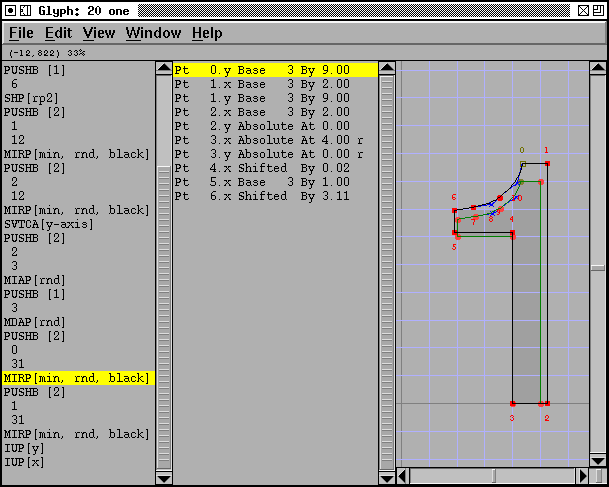
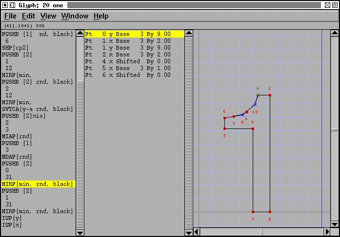
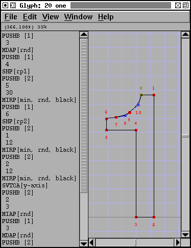

A TrueType® Font Modifier
TtfMod is not a font creation program, look at PfaEdit for that. It is designed as a companion program to PfaEdit, to take an existing TrueType (OpenType, TrueType Collection) file and allow you to edit some of the tables. This is primarily to provide access to certain features of TrueType that would be awkward to fold into PfaEdit's UI, specifically TrueType instructing (hinting). (It has helped me figure out why PfaEdit's TrueType instructing is so bad).
This program isn't finished yet. The Save and Save As commands may have problems. Let's pretend it's called ttfview for now...
TrueType is not standardized. It is an evolving specification with at least three groups working on it and changing it in different ways. The major players are:
None of these is entirely consistant with the others.
This is unfortunate.
Good luck.
This window shows you all the tables in the truetype file. It also shows you where those tables start and how big they are (that's probably useless information in almost all cases). Double clicking on a table will bring up a table editor to allow you to modify that particular table. Double clicking with the control key down will bring up a bare hex editor. Not all tables are editable (yet), and some tables are tightly connected so you can't edit one without editing the other (for example the loca and glyp tables are bound together).
If you move the cursor onto one of the tables and leave it there, a popup will appear giving a better explanation of the table than the often cryptic four character name.
NOTE: TTF tables are often intricately interconnected. Be careful about changing things that affect other tables. ttfmod will not fix up the others. For example: don't change the Glyph Count field in the 'maxp' table or you will confuse almost every other table.
No access will be provided to the CFF table of an opentype font. This is essentially postscript data and is better viewed from PfaEdit.
In a ttc file (A TrueType collection file) there may be more than one font.
I shall not attempt to explain what all the tables do, I refer you to the True/Open Type docs for that:
If you want to use TtfMod's grid-fitting debugging capabilities you must install FreeType's library. You must also either live in a country where Apple's TrueType grid fitting patents are not applicable or have obtained a license from Apple allowing you to use their patent and then compile the FreeType library with grid-fitting enabled (in ftoption.h), then set similar #defines in ttfmod/config.h. For more information contact Apple's legal department or see FreeType's patent page.
(NOTE: I found that I needed to change options in
include/freetype/config/ftoption.h)
If you have freetype configured properly then configure.ttfmod should be able to choose a configuration that is appropriate.
Before you do anything else you should download and build
PfaEdit. TtfMod also uses libgdraw and
libgunicode.
Then you should download
libfreetype,
configure it, build it and install it.
I have a kind of funky configure script which will improve once I've got
ttfmod fully integrated into the distribution (it isn't integrated yet because
it doesn't work yet). Anyway the configure script lives in the top pfaedit
directory and is called configure.ttfmod NOT
configure (configure will configure pfaedit). Once
you've configured it cd into the ttfmod directory and type
make:
$ gunzip ttfmod_src*.tgz $ tar xf ttfmod_src*.tar $ cd pfaedit $ configure.ttfmod $ cd ttfmod $ make
This will look different depending on what capabilities you have enabled.
If you are not burdened by Apple's patents then the view will look like
this:

On the left is a list of instructions that define the hints for the current
character, centered is a gloss on these instructions, and to the far right
is the image of the character.
If you move the mouse over an instruction you will get an list of what the instruction pops off the stack (and perhaps other bits of state), and a description of what the instruction does.
If you click on a gloss, the instruction which generates that gloss will also be highlit, as will the point which is affected.
The original set of splines that define the character will be displayed with red dots for the points and blue crosses for the control points. Numbered points will have their numbers displayed somewhere near-by. The grid fit version of the spline will be displayed with green dots. The rasterized image of the glyph is displayed in grey. (You can change the grid size (the pixels per em)) with the view menu.
If you are subject to Apple's patents:

Note that the grid-fit splines and the rasterized image are missing.
If you are more paranoid than I am:

And have turned off the debugger entirely, then the gloss is also missing.
Clicking on a point selects it and scrolls the debug pane to the first
instruction that moves that point, and scrolls the instruction pane
similarly.
Clicking with the middle mouse button zooms in. Meta-clicking zooms out.
TtfMod isn't very far along. I may not pay much attention to bug reports for a bit, but I'm sure you'll find some. If you can isolate one and come up with a reproduceable minimal case, that would be great. The executable has symbols in it so if you run it in gdb you should be able to get a stack trace... Do what you can.
This program would have been far harder to write if the freetype library hadn't done almost exactly what I wanted.
Valek Filippov gave me the russian translation.